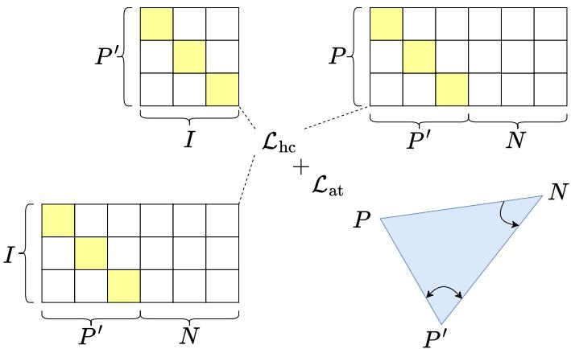

arXiv 新增 / CLIP 表征几何 · P1 · 2026-06-25
HANCLIP：HANCLIP 把“图像是什么”和“图像不是什么”一起编码，用双曲几何表达层级/非对称关系，再用 angular triplet objective 拉开否定描述
不大规模重训即可增强 CLIP/LongCLIP/SmartCLIP/HiMo-CLIP 的 negation sensitivity。
编号2606.23843
优先级P1
类别arXiv 新增 / CLIP 表征几何
会议arXiv 新增 / CLIP 表征几何
方法Hyperbolic formulation + angular triplet objective for negation-aware VLMs。
来源arXiv / OpenReview
先说结论。HANCLIP 把“图像是什么”和“图像不是什么”一起编码，用双曲几何表达层级/非对称关系，再用 angular triplet objective 拉开否定描述。 不大规模重训即可增强 CLIP/LongCLIP/SmartCLIP/HiMo-CLIP 的 negation sensitivity。


核心问题
HANCLIP 把“图像是什么”和“图像不是什么”一起编码，用双曲几何表达层级/非对称关系，再用 angular triplet objective 拉开否定描述。
方法拆解
Hyperbolic formulation + angular triplet objective for negation-aware VLMs。
主要贡献
不大规模重训即可增强 CLIP/LongCLIP/SmartCLIP/HiMo-CLIP 的 negation sensitivity。
实验看点
NegBench 有稳定增益，同时标准分类和图文检索保持竞争力。
局限与读法
额外数据只有 20K quadruplets，覆盖的否定类型有限；对开放世界组合否定还要实测。